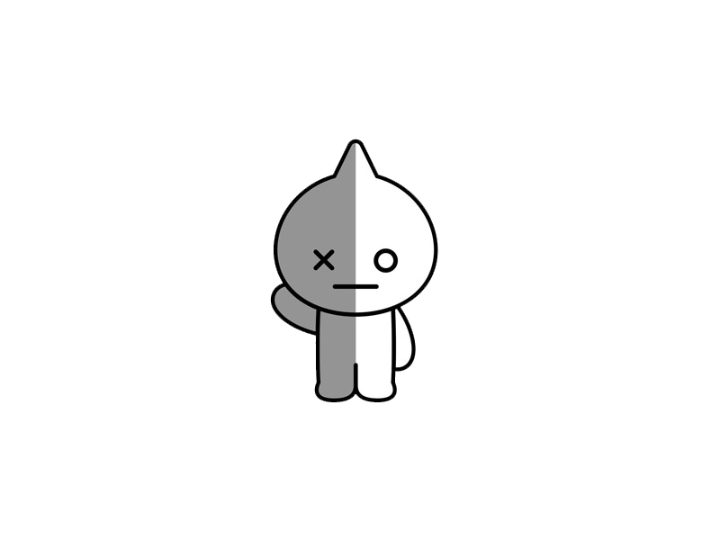

TRABAJOS PERIODO 1
Aca encontraras todos los trabajos del primer periodo :)

Es un lenguaje de programación que fue creado con la intención de extender el lenguaje de programación C.
La programación es un lenguaje eficiente tanto como para el humano como para la máquina
Librerias
Ayuda al computador a saber que es lo que el solo va a usar
Las librerias contienen el código objeto de muchos programas que permiten hacer cosas comunes, como leer el teclado, escribir en la pantalla,etc.
Variables
Es un espacio donde se pueden agregar/meter cosas
Globales:Esta variable es accesible a todos los ámbitos de un programa informático
Locales: Esta se restringe a la función que le han declarado